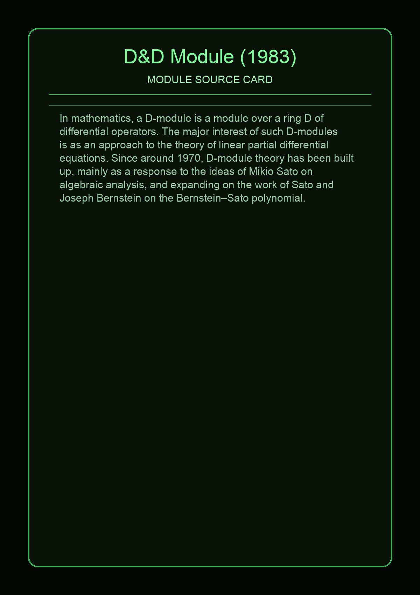

No local photo available for this source yet.
In mathematics, a D-module is a module over a ring D of differential operators. The major interest of such D-modules is as an approach to the theory of linear partial differential equations. Since around 1970, D-module theory has been built up, mainly as a response to the ideas of Mikio Sato on algebraic analysis, and expanding on the work of Sato and Joseph Bernstein on the Bernstein–Sato polynomial.
This page aggregates references to the source material behind Name Lore entries.